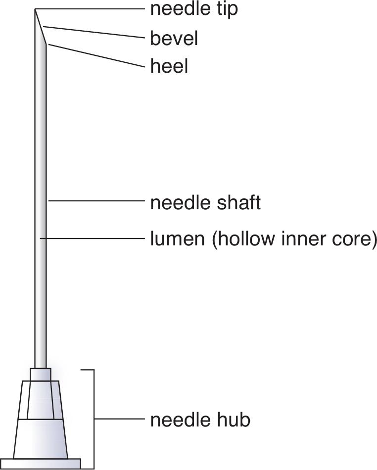
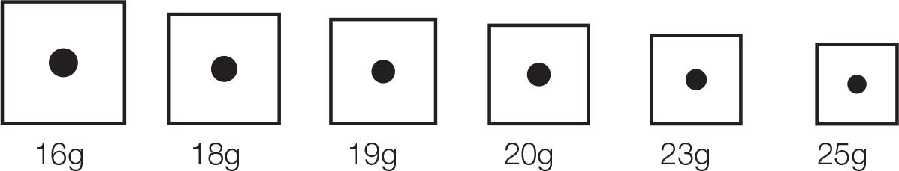
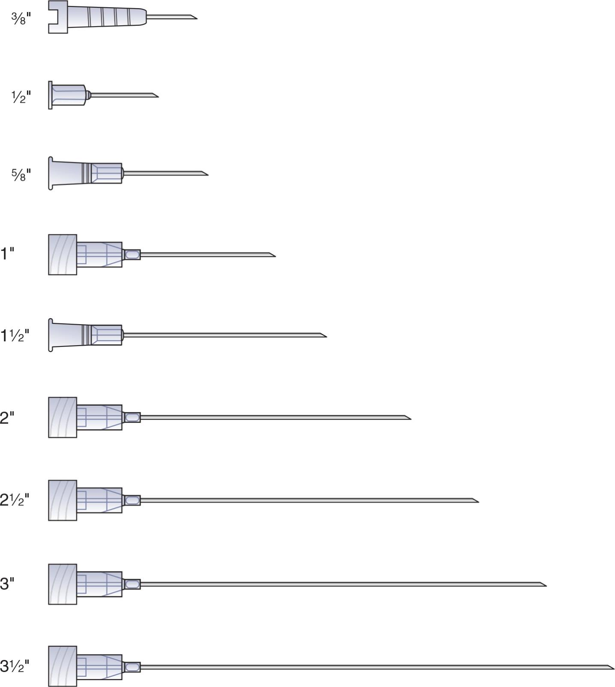
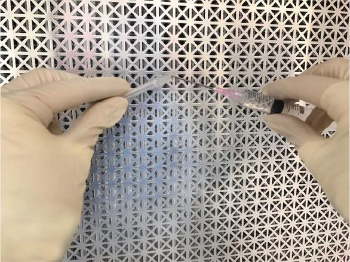
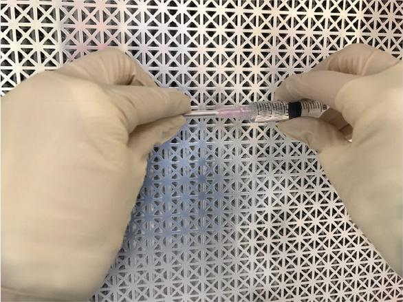
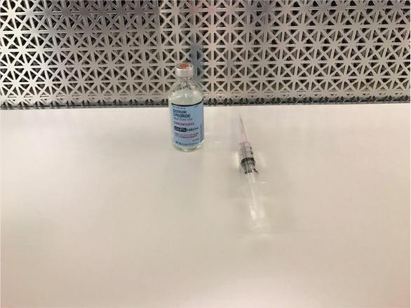
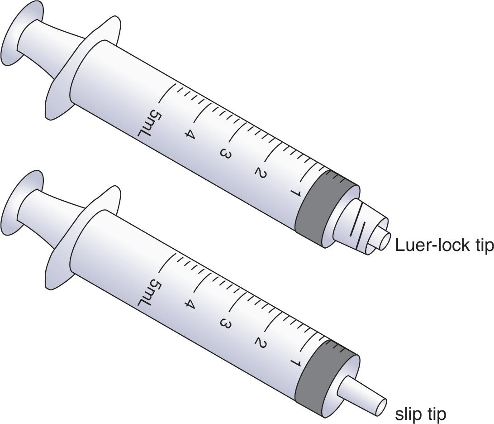
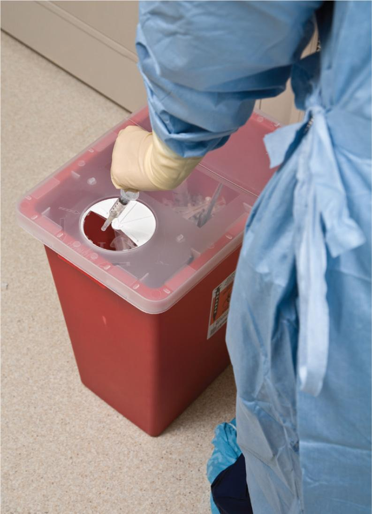

Part 2: Training
5.5 Examine the Resources and Supplies
A close examination of each supply item provides sterile compounding personnel with the understanding they need to identify and select the appropriate items needed for a specific sterile compounding procedure. Knowing the design components of each supply item also aids the safe handling of the item while working in a PEC.
Needles
In sterile compounding, needles are used to inject or withdraw fluid from a variety of containers. Needles are individually wrapped within one of two types of outer packaging: either a hard-plastic cap covering the needle hub (designed to be twisted off and then discarded) or a hard-plastic or soft-plastic wrapper (similar to a plastic bag and designed to be opened and discarded).
Components
Several components are common to every needle (see Figure 5.1). The needle tip is at the very end of a needle and is razor sharp. It has a slanted opening or bevel. The heel is the rounded part of the bevel at the point where the slanted opening ends, opposite the needle tip. The needle shaft provides length to a needle and extends from the colored needle hub (attached to the metal needle) to the needle tip. The inner core of the needle shaft is the lumen, a hollow space through which fluid moves into or out of a syringe. The needle hub is the end point, which attaches to a syringe. A hard-plastic cap covers the needle shaft and tip until the moment of use. The cap is the only place where sterile compounding personnel can aseptically touch or hold a needle.

A needle’s size is determined by its gauge and length. Needle gauge refers to the diameter of the opening, or lumen, of a needle. Sterile compounding needles generally range in size from 16 gauge (16g) to 25 gauge (25g). The size of the gauge corresponds conversely to the size of the lumen: the larger the gauge number, the smaller the lumen and, consequently, the smaller the hole that the needle makes; the smaller the gauge number, the larger the lumen and, consequently, the larger the hole that the needle makes. For example, a 25-gauge needle makes a very small hole, whereas a 16-gauge needle makes a much larger hole (see Figure 5.2).

Sterile compounding personnel choose a needle gauge based on the task they need to perform. When drawing up a viscous liquid, such as albumin, personnel would choose a needle with a large lumen (indicated by a small gauge number). Conversely, personnel would select a needle with a small lumen (indicated by a large gauge number) when providing a small volume of an IM medication for a neonate. During sterile compounding procedures, personnel often use 18-gauge or 20-gauge needles. These gauge sizes enable them to draw up fluid into a syringe without creating a large hole in a vial stopper or an injection port.

Sterile compounding personnel also choose needle lengths according to the task being performed (see Figure 5.3). For most sterile compounding procedures, personnel select a regular needle with a standard 1½” length. This needle length is necessary for removing fluid from large vials because shorter needles may not be long enough to penetrate into the vial to reach the fluid.
Handling
Every component of a needle, except the exterior surface of the needle cap, is considered to be a critical site and must never be subjected to touch contamination or shadowing. Needles are completely sterile, provided that they are removed from the outer packaging aseptically.
Sterile compounding personnel should follow the Standard Operating Procedures (SOPs) of their facility regarding the safe handling of needles and documentation of needlestick injuries. To safely recap a needle, sterile compounding personnel should use the standard recapping method. This method requires personnel to hold a filled syringe as they would hold a dart and then recap the needle by holding the cap between the thumb and forefinger of the nondominant hand and carefully slipping it over the tip of the needle. The needle cap should then snap into place on the syringe. The standard recapping method helps to prevent touch contamination of the needle-and-syringe unit but may lead to an inadvertent needlestick.
In the past, some sterile compounding personnel used the scoop method to recap a needle. In this method, personnel scoop the needle cap off the PEC’s work surface using the needle-and-syringe unit as a tool. This method was used to lessen the chances of a needlestick during the needle-recapping process. However, this method presented too great a risk of touch contamination during sterile compounding procedures. Therefore, best-practice standards now dictate using the standard recapping method whenever a needle must be recapped, such as when changing from a regular needle to a filter needle, or when placing a capped needle-and-syringe unit on a PEC’s work surface to await a pharmacist’s verification check. In sterile compounding situations that do not necessitate recapping, such as when finished with a needle-and-syringe unit, personnel should immediately discard the used needle into a sharps container.
WORKPLACE WISDOM
Preventing needlestick and sharps-related injuries in the pharmacy is an important topic. Personnel should be familiar with their facility’s SOPs regarding needle safety and needlestick injury documentation.
A sterile compounding procedure with a heightened risk of needlestick injury is the recapping of a needle-and-syringe unit prior to a pharmacist’s verification check. A three-step method, referred to as “TAP–SNAP–CHECK,”; demonstrates the standard recapping method and is a deliberate, safe approach.



Syringes
Sterile compounding personnel use syringes to withdraw and inject medications, base solutions, and additives during the sterile compounding process. Personnel first draw up the fluid through a needle-and-syringe unit and then inject the fluid into a vial to reconstitute a powdered drug or into an IV or IVPB bag for patient administration. Syringes are individually wrapped and are completely sterile, provided that personnel remove the syringes aseptically from their outer packaging.
Components
A syringe has several important components (see Figure 5.4). The syringe tip, sometimes called the syringe hub, is the site where a needle attaches. Two types of syringe tips are available: a Luer-lock tip and a slip-tip. A Luer-lock tip requires sterile compounding personnel to screw a needle onto a Luer-lock tip syringe. This type of tip offers a secure connection. In contrast, a slip-tip syringe slides onto the hub of a needle. (To visualize these two different syringe tips, refer to Figure 5.5.)

View long description Hide description
The labels from left to right are as follows: syringe tip or hub
(Luer-lock); barrel including calibration marks, piston plunger, and syringe measurement point; top collar, inner plunger shaft, and flat knob.

In addition to the syringe tip, other components of a syringe include the barrel and the piston plunger. The barrel of a syringe contains the calibration marks for measuring fluid volume in either milliliters, tenths of a milliliter, or hundredths of a milliliter. Sterile compounding personnel should check the calibration marks on the syringe barrel to determine which unit of measure is being used because different unit types are measured at different spots on the barrel. Inside the barrel of the syringe is a black, rubber-tipped piston plunger. The piston plunger moves in and out of the barrel to adjust the fluid volume within the syringe. The plunger comes in direct contact with the fluid entering the syringe. Behind the piston plunger is the inner plunger shaft. The barrel ends at a hard-plastic flange or top collar. The flat end of the plunger, or flat knob, is most distant from the syringe tip and is also known as the lip or heel of the syringe.
Handling
Sterile compounding personnel can touch or hold a syringe only on the exterior surface of the barrel, the top collar, and the flat knob. The critical sites of a syringe are the tip or hub, the piston plunger, and the inner plunger shaft. These critical sites should never be subject to contamination by touch or shadowing. Personnel should also avoid swabbing the critical sites of a syringe prior to use. Finally, if a syringe accidentally comes into contact with anything other than the sterile hub of a needle, the contaminated syringe must be discarded into a sharps container.
Some syringes come with a plastic cap covering the syringe tip. Sterile compounding personnel must remove this cap before attaching a needle. In addition, personnel should be aware that manufactured syringes have a slight negative pressure where the tip of the rubber-tipped piston plunger meets the inside top of the syringe barrel. Just prior to using the syringe, personnel must pull down on the flat knob of the plunger to break the pressure seal inside the syringe. This action, referred to as activating a syringe, enables fluid to be drawn into the syringe with greater ease.
IV Base Solutions
IV base solutions, or LVPs, are frequently used in sterile compounding procedures. The majority of these solutions come in bags made from softened plastic products. The container is flexible and expands or collapses according to the volume of fluid that is added or removed from the bag.
Components
The top of an IV bag contains a small, plastic hang loop for suspending the bag from the hang bar within a PEC or from an IV pole at a patient’s bedside. Calibration marks on the face of the bag help sterile compounding personnel determine the volume of fluid in the bag. The face of the bag also contains the manufacturer’s information identifying the ingredients in the bag, such as the concentration of dextrose or sodium chloride. The injection port and the tubing port are located on the bottom of the bag. Sterile compounding personnel inject additives through the injection port, which self-seals once the needle is removed.
In many facilities, SOPs require sterile compounding personnel to apply a tamper-evident, sterile, adhesive seal over the injection port of an IV bag prior to sending the CSP to the nursing unit. When a nurse is ready to administer the IV solution to a patient, the nurse removes the rubber cap covering the bag’s tubing port and inserts the tubing’s universal spike adapter (also known as the spike) into the tubing port.
Handling
The injection port of an IV bag is a critical site and must be wiped with sterile 70% IPA prior to the injection of medication. Once swabbed, the injection port must never be subject to contamination by touch or shadowing. However, because the tubing port of an IV bag has a sterile, inner seal, this port must not be swabbed with sterile 70% IPA. Once the rubber cap over an IV bag’s tubing port is removed, the tubing port is then considered a critical site and must be treated as such with regard to preventing touch contamination or shadowing.
IVPB Base Solutions
IVPB base solutions are used solely for the dilution and administration of IV medications. However, because the solution is “piggybacked” into the tubing line of an LVP bag and administered to a patient as a single dose over a short period, the volume of the IVPB bag is smaller than an IV base solution bag.
Components
IVPB bag components are similar to those of an IV base solution bag. The top of the bag has a hang loop; the face of the bag contains identifying information from the manufacturer; and the bottom of the bag contains both an injection port and a tubing port.
Handling
The injection port of an IVPB bag, like that of an IV base solution bag, must be wiped with sterile 70% IPA prior to the injection of medication. In addition, if the rubber cap over the IVPB bag’s tubing port is ever removed, the tubing port is then considered a critical site and must be treated as such with regard to preventing touch contamination or shadowing. However, because the uncapped tubing port of an IVPB bag has a sterile, inner seal, it must never be wiped with sterile 70% IPA.
Vials
Vials are sterile, sealed containers that are used frequently in sterile compounding. Some vials may contain a sterile liquid medication that is ready to be drawn up into a syringe. Other vials many contain a powdered medication that requires reconstitution with a diluent such as SWFI or normal saline. In the latter scenario, sterile compounding personnel would draw the diluent into a syringe, then inject it into a vial containing a powdered medication. Once the powdered medication is reconstituted, they would then draw up the liquid medication into a syringe and inject it into an IV or IVPB bag.
Some common vial sizes are 5 mL, 10 mL, 20 mL, and 30 mL. The choice depends on the volume of fluid or the amount of powdered medication in the vial. However, while working in a buffer room, sterile compounding personnel may encounter vial sizes from as small as 1 mL to as large as 500 mL.
Components
A hard-plastic cap covers the top of a vial and must be removed prior to use of the vial. Under the cap is a self-sealing vial stopper or septa through which a needle or dispensing pin is inserted to inject or withdraw fluid.
Handling
The critical site of a vial is the self-sealing vial stopper, also known as the stopper, vial top, or septa (see Figure 5.6). The vial stopper must never be subject to touch contamination and must be swabbed with sterile 70% IPA prior to injection.

View long description Hide description
The labels from top to bottom are as follows: Vial, fluid, aluminum band surrounding vial stopper, vial stopper, critical site of inverted vial and needle-and-syringe unit, and critical site of inner plunger shaft.
Sharps and Waste Containers
Sharps containers are receptacles for the disposal of sharps waste such as needles, syringes, ampules, and broken glass. In addition, vials that contain products derived from human blood serum such as albumin, Factor IV, and Factor VIII are frequently discarded into a sharps container. No other items—including IPA swabs, vials, empty IV bags, paper waste, and other nonsharps waste—should be discarded into a sharps container. These items should be discarded into a regular or hazardous waste container as applicable.
Several different colors of sharps and waste containers may be used in pharmacy compounding. These colors include red, yellow, and black, and each color signifies the type of waste that should be discarded into that container. A red sharps container is most commonly used to safely dispose of all biohazardous or otherwise dangerous compounding sharps items. Some facilities also prefer that used IV tubing be discarded into a red sharps container because the universal spike adapter has a sharp point. Sterile compounding personnel must follow their facility’s SOPs for the disposal of IV tubing.
A yellow or black container is used for the disposal of chemotherapy and other hazardous drug compounding waste. Yellow containers are typically used for trace hazardous waste and potentially contaminated Personal Protective Equipment (PPE) such as chemotherapy gowns and gloves. Black containers are typically used for bulk hazardous waste. (For more information on these hazardous sharps containers, refer to Chapter 16.)
Sharps containers also are available in several different sizes, ranging from a 0.5 gallon to a 30 gallon capacity. Patients with diabetes frequently use 0.5 gallon sharps containers to dispose of used insulin syringes. Clinics often use 1 gallon or 2 gallon sharps containers to dispose of waste from immunizations and other injections. Laboratories and sterile compounding environments generate large volumes of sharps waste and, therefore, often use sharps containers that range in capacity from 8 gallons to 30 gallons.
Components
A sharps container is made of a hard-plastic material that is impenetrable by needles and broken glass. A hard-plastic lid is available to cover the top of each sharps container. Once the lid is snapped onto the bucket, the lid is then locked into place and cannot be removed without visibly damaging the entire container. The snap-lock lid has a small opening that may be left open until the bucket is full.

Handling
Sterile compounding personnel must wipe down the exterior of a sharps container with a disinfectant registered with the US Environmental Protection Agency (EPA), sporicidal agent, or sterile 70% IPA before bringing it into the clean side of the anteroom or within the perimeter of the segregated compounding area (SCA). The sharps container should then be placed next to the PEC and positioned so that the container does not block airflow into the PEC’s prefilter.
The sharps container remains in the buffer room until it is full, which occurs when the waste is approximately two inches from the top of the container or is at the fill line indicated by the manufacturer. Once full, sterile compounding personnel move the sharps container into the anteroom; attach the hard-plastic, snap-lock lid onto the top; and close the self-locking opening in the lid. The locking action prevents access to the dangerous waste.
Pharmacy-generated sharps containers, once filled, are generally retrieved and disposed of by a company that specializes in the disposal of medical waste. Medical waste disposal companies are regulated by the EPA, the US Department of Transportation (DOT), and the Drug Enforcement Administration (DEA). In most cases, pharmacy-generated sharps waste is autoclaved prior to being disposed of in a landfill. Best practice for sharps disposal involves incineration, instead of autoclaving and landfill disposal; however, this option is a more expensive alternative. Hazardous waste that results from chemotherapy compounding requires special, high-temperature incineration procedures that are discussed in Chapter 16 of this textbook.
Although most facilities use red sharps containers for nonhazardous waste and yellow sharps containers for trace chemotherapy waste, a small number of states have implemented the use of “universal waste containers” that may be black or blue in color. Universal waste containers allow all medical, pharmacy, and hazardous waste to be disposed of by incineration without separating these waste categories into multiple bins. Sterile compounding personnel should consult their facility’s SOPs for information on disposal procedures for pharmacy-generated waste.
Sterile IV Tubing
In the sterile compounding environment, personnel use sterile IV tubing to transfer solutions from one container into another. This type of tubing is called secondary IV tubing and differs from the primary IV tubing that nursing personnel use to administer IV base solutions to patients. However, both types of tubing share some common components.
Components
The main components of sterile IV tubing include the universal spike adapter (also called the tubing spike or spike), the drip chamber, the roll clamp, the tubing itself, and the needle adapter (see Figure 5.7). Sterile compounding personnel insert the universal spike adapter into the tubing port of the IV source container. They observe the drip chamber to calculate the flow rate at which the IV solution is being infused. The roll clamp is used to regulate the flow rate of the IV solution from the source container into the receiving container or patient. The far end of the tubing is called the needle adapter. Personnel attach a needle to the adapter and insert the needle into the EEC, the receiving container, or the primary tubing. Needleless adapters are commonly used when connecting to the primary tubing.
Handling
The critical sites of sterile IV tubing are the universal spike adapter and the needle adapter. Sterile compounding personnel must remove the protective plastic caps prior to using these adapters. Because the universal spike adapter and the needle adapter are sterile, personnel must not wipe these components with sterile 70% IPA prior to use. If accidental contact with the universal spike adapter or the needle adapter occurs, personnel must dispose of the contaminated IV tubing. In addition, if personnel drop the IV tubing or allow it to touch anything other than the sterile tubing port or needle hub (including a PEC’s work surface), they must immediately discard the contaminated IV tubing into an appropriate waste container.

View long description Hide description
The components from top to bottom are as follows: universal spike adapter, drip chamber, injection port, roll clamp or slide clamp, luer lock (when attached to a needle, the needle adapter is inside the hub of the needle), and cap covering the needle.